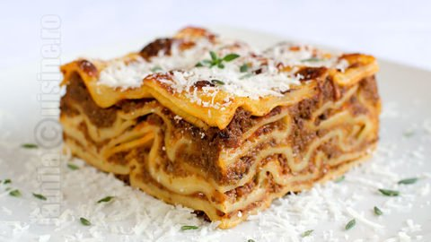

Lasagna

Descriere
Lasagne sunt un tip de paste largi, plate, posibil unul dintre cele mai
vechi tipuri de paste.
Lasagna este un fel de mâncare italiană compus din straturi suprapuse de
paste subțiri plate, alternând cu umpluturi precum ragù și alte legume,
brânză și condimente și mirodenii precum usturoiul, oregano și busuioc.
Ingrediente
- 700ml lapte
- 1kg carne tocata
- 3-4 linguri ulei
- 2 morcovi
- 2 cepe
- 2 frunze de dafin
- 70g faina
- nucsoara
- 70g unt
- piper
- sare
Pasi de urmat
- Asamblare lasagna in tava
- Se toarna un strat din sosul bechamel
-
Deasupra de stratul de foaie se pune din nou un strat subtire de sos
bechamel
- Coacere la cuptor Lasagna